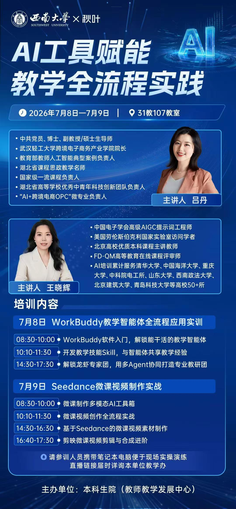
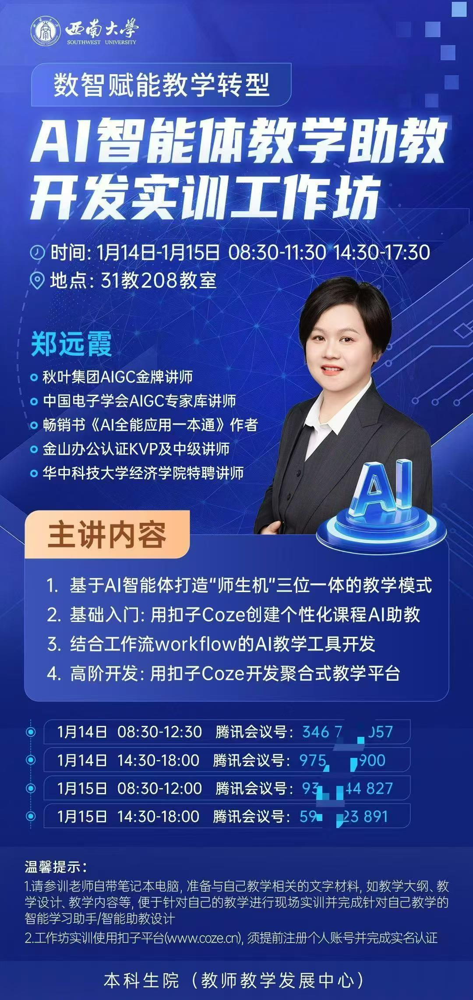
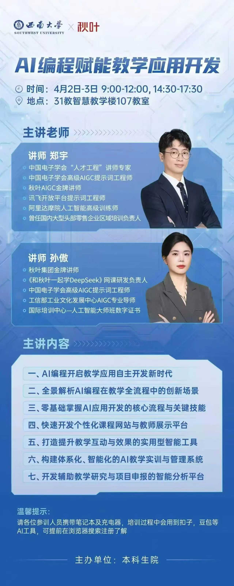

案例6
西南大学
教师数字素养培训




培训围绕"数智赋能教学创新"主线递进展开，涵盖AI智能体教学助教开发实训、数智赋能教学创新、AI编程赋能教学应用开发、AI工具赋能教学全流程实践四大主题，从工具实操到课程重构层层深入
学员普遍反馈课程实效性强，讲师团队亦高度评价西南大学教师的学习热情与投入度——教与学彼此成就，实现了一场"双向奔赴"
数智融合教学
2026年上半年，西南大学教发中心联合秋叶团队开展
4期共8天专题培训，每期参训教师超100人
作为西部师范类头部院校，西南大学的培训实践形成示范效应——重庆师范大学、重庆人文科技学院、山东师范大学、重庆三峡医药高等专科学校等川渝及全国高校相继引入同类培训
辐射效应